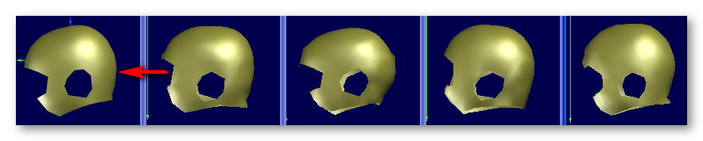
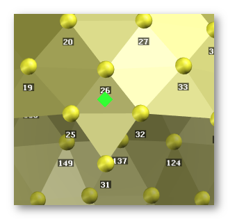
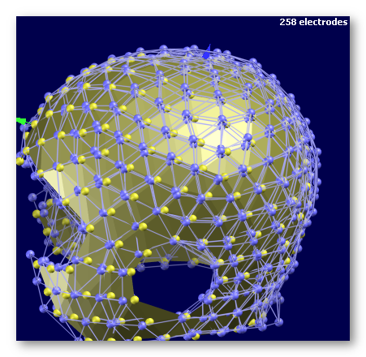
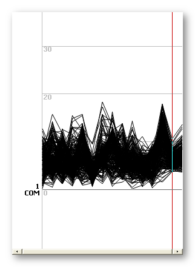
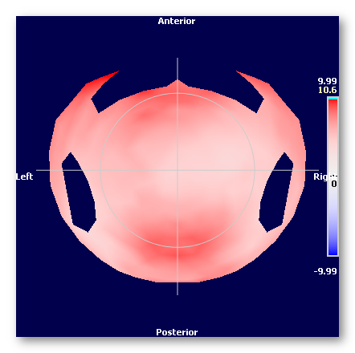

This is a utility to build an average electrodes coordinates file from a set of subjects or measurements (average is the left one):

The method works this way, with the 2 first stages being the main ones:
Building a first temporary average, by coregistering all files to the first one.
Coregistration is done by minimizing the sum of the squared distances between the same electrodes, with a global optimization process. The transformation function has 7 parameters (3 for translations, 3 for rotations, 1 for global scaling).
Coregistering all files to the current average, then averaging the results to have a new average .
This is repeated a few times (convergence is quite fast), and the same 7 parameters function is used.
Finally, some post-processing:
Symmetrizing the final average;
Re-orienting to the RAS system (X: Right, Y: Anterior, Z: Superior);
Aligning the Y axis to the line Fpz-Oz.
Computing the final quality measures.
The method is insensitive to which file is picked first in the first stage, apart for a slight different global scaling.
The number of repetitions of the second stage is currently set to 3, as the resulting average does not evolve significantly afterward.
Only a global scaling is allowed, and not 3 different scalings for each axis. We want to average the shape of the heads, and having different factors in x, y or z does alter the original shape. Plus, it would make the whole process very dependent to which file is picked in the first stage.
Called from the Tools | Averaging Electrodes Coordinates menu, you simply have to follow these steps (no dialog for the moment):
Give the list of files to be averaged;
Give the output file name;
Provide the Cz, Fpz and Oz approximate locations
(you can specify up to 4 electrodes for each locus, like "125 138 137", to use their average position).
The process begins straight away. At the end, it can burps a few error messages that are worth reading, usually indicating that the result is somehow unreliable and some files to be excluded.
The files to be averaged should be taken from the same source/process of measurement:
They should have the same orientation (though it can be arbitrary),
the same number of electrodes (!),
but centers, scalings and some rotations are allowed (and expected), and can be arbitrary.
See here an example for specifying Fpz, as we gave the electrodes 25 26 and 32, so to have Fpz in the middle of these 3 points:

Here are the output files:
All files will begin with the output file given;
A .xyz file for the average electrodes;
A .Distances.sef file for the distances to the final average
A .vrb verbose file.
To help visualize, see here 3 coregistered files (blue meshes & electrodes) on top of the final average (yellow triangles):

It indicates the distance of each file to the average, for each electrode (distance from the blue electrodes to the yellow ones in the figure above). The Y axis are the electrodes, and the X axis is the index of each of the original files.
Plus, there are 2 more positions in X ("files"):
The average of the distances, per electrode, across all files.
This measure is equivalent to a Mean Absolute Deviation, and measures the distance from the data set to the average.
The dispersion of the distances, per electrode, across all files.
This measure is a within group average distance (average of distances of all pairs of data), and measures the variability of the coregistered data .
Note that the SD of the distance to the average is not a very interesting measure here: if all files are all wrong but within an equal range, the SD would be low anyway, even though the coregistered data being far.
You can of course link this distance file with the average .xyz to visualize the results, here we can see the average of electrodes distances:

It contains all the input parameters, the content of the distance file plus some more details.
In addition to the distance, you will find 2 more rows (in Y):
The average of the distances, per file, across all electrodes,
including on the last 2 columns the average of average of distances, and the average of dispersion.
The Coefficient of Variation of the distances (CoV, normalized SD/Avg), per file, across all electrodes,
including on the last 2 columns the CoV of the average (not the average of the CoV) and the CoV of dispersion.
The error messages you might have had at the end of the processing are also reproduced into the verbose file, so you can have a second thought on them:
It could be that a file is considered globally unfit to the average, by comparing the average distance across all the electrodes, to the average of average of distances.
Or it could be that some electrodes of a file are considered locally unfit to the average , by comparing its CoV of all electrodes to about 52%.
The advice is to first remove the files of the first category, run again the averaging, then only remove the files of the second category, if there remain some anymore.